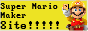

Mario Maker for Wii U in 2025?
One of the first games that I personally bought for my Wii U is Super mario maker question is, is it any good?
You'll will need to homebrew your console so you can use the pretendo network, nintendo have closed down the nintendo servers for all wii u and 3ds games.
The Negatives
I find the support with MM to be a bit lackluster unlike with other games like for example Mario kart or splatoon, theres still alot of features missing such as new arrivals and star ranking which personally sucks.
You can however search for levels using level ID's which i consider a bonus however level ID's are absloutely huge hugemongus pieces of text. Which espesically sucks trying to dot that down all on the crappy Wii U's touchscreen.
I would say a good 80% of the levels on SMM are absolute crap, which espesically sucks when you can only browse for levels in the highlights section although you can search by catorgorys which makes things a bit easier. Still its pretty hard to seperate the wheat from the chaff so to speak.
The are alot of decent and very creative levels out there, I find that with SMM pretendo site you can find most them. My favoruite levels have to be the ones made by SMM1 Music
Amount of work that must go into creating music in SMM must be absloutely insane. Generally speaking, you get quite alot of value out of SMM due to the fact that there is an infinite amount of LVLS.
I find it pretty awesome really, espesically considering that copies of this game can generally fetch for as low as £6. Thats insanely good value right there NGL for comparison SMM2 costs £20 and you've gotta pay for NSO as well.
If you already own a Wii U, I would highly reccomend this game. For £6 you can hardly go wrong, thats the same price as mcdonalds meal.
SMM site
